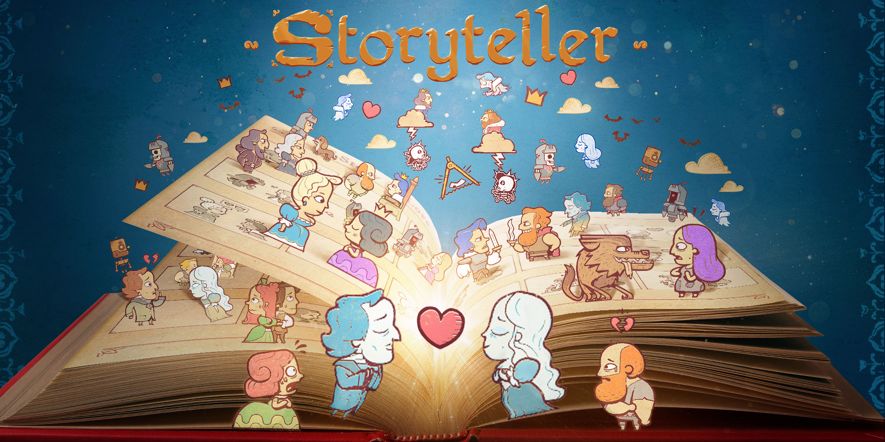
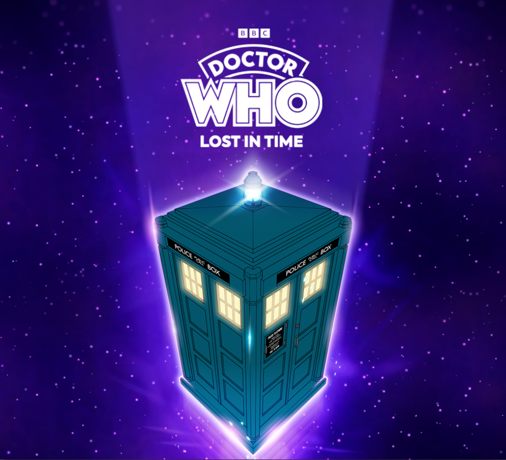
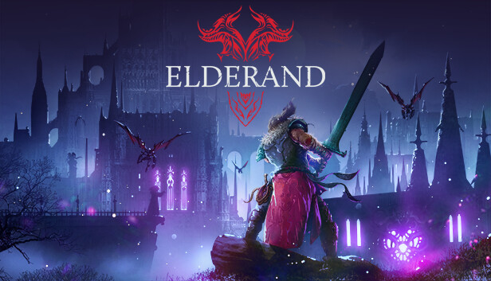
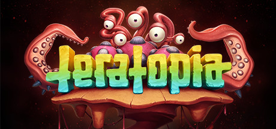

Senior Game Developer
Córdoba, Argentina
With over 14 years of experience in the games industry, I specialize in bridging the gap between high-level software engineering and high-fidelity visual execution. My career has been defined by a deep mastery of Unity (10+ years) and a versatile command of C++ and Python, allowing me to navigate complex engine architectures and build robust, scalable systems.
I have a proven track record of bringing demanding titles to various platforms, ensuring peak performance through rigorous profiling and custom optimization strategies.
Beyond core programming, I thrive as a Technical Artist. I leverage my knowledge of HLSL/GLSL shaders, VFX, and rendering pipelines to empower creative teams and deliver stunning visual results without compromising technical integrity. Whether I am architecting systems or crafting complex visual effects, my goal is always to create seamless, immersive player experiences.
Unity
Nintendo Switch - Netflix Mobile (Android / iOS)
Ported the game to Nintendo Switch and Netflix.
Implemented platform-specific APIs for cloud saves and achievements.
Integrated HD Rumble support for Nintendo Switch.
Performed performance optimizations to meet platform requirements.

Unity
Android - iOS
Developed an idle game based on the Doctor Who franchise using Unity.
Integrated a custom-built idle engine to handle core game mechanics.
Implemented UI systems.
Authored visual effects (VFX) to enhance the game's aesthetic.
Integrated backend database APIs and advertising SDKs.

Unity
PC - Switch - Xbox Series X/S
Co-developed alongside the original team for the PC version.
Ported the game to Xbox Series X/S and Nintendo Switch.
Implemented platform-specific APIs for save systems, achievements, and
controllers.
Performed shader and effects optimizations.

Unity
PC - PlayStation 4 - Xbox One
3D action brawler made in Unity.
Architected and programmed complex AI systems and behaviors.
Developed custom shaders and visual effects (VFX) to enhance visual fidelity.
Created internal editor tools to streamline the production pipeline and
workflow.
Implemented core gameplay mechanics and general game systems.
